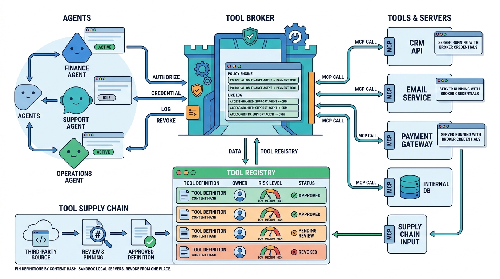

Part V — TOOLS: Tools and Execution Boundaries
Tool Ecosystems, MCP and the Tool Broker
AI-assisted: written with Claude Code, images generated with the Gemini API. How this works

Image generated by Google Gemini (gemini-3-pro-image-preview)